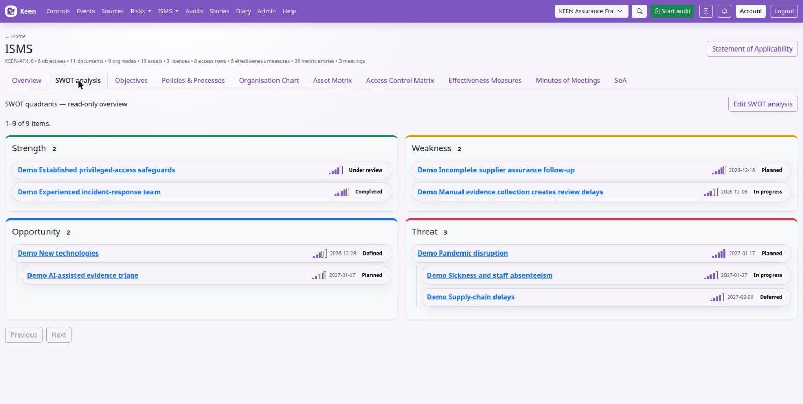
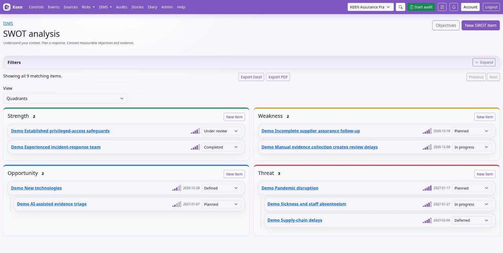

Using KEEN
SWOT analysis and objective planning
Chapter 9 of 16
SWOT analysis and response planning
SWOT is where you write down what helps you, what holds you back, what you could pursue and what could go wrong, and then plan a response to each. This chapter takes you from one item to a whole analysis you can filter, review, export and audit.


Open ISMS → SWOT analysis. The SWOT tab on the ISMS page shows read-only quadrants; Edit SWOT analysis opens the planning workspace at /swot.html.
| Quadrant | What to consider | Example response |
|---|---|---|
| Strength | An existing capability that supports the organisation, such as an experienced incident response team. | Maintain skills through exercises and share expertise. |
| Weakness | An internal limitation, such as dependence on one person for recovery procedures. | Document the procedure and train a second operator. |
| Opportunity | A favourable possibility, such as automating repeated assurance checks. | Pilot automation and evaluate coverage and time saved. |
| Threat | A condition that could undermine an outcome, such as widespread staff absence. | Review continuity arrangements and test critical cover. |
How SWOT relates to risks and objectives. SWOT captures context and choices. Risks hold assessed scenarios with likelihood, impact and treatment. Objectives hold measurable outcomes and the work to reach them. Link the three so a reviewer can follow an issue to an action and its evaluation.
Create a useful SWOT item
- Choose your framework, open SWOT analysis and select New SWOT item. Each quadrant also has a New item button that preselects its type.
- Enter a short Title and the Quadrant. Use one record per issue that needs its own owner, response or evaluation.
- Choose Significance (1 low – 5 high) and explain it in Context and significance rationale: the affected activities, the supporting observations and why the rating fits.
- Set an Accountable owner and Status, and optionally a Planned start and Target completion. Dates are optional in every quadrant, strengths included; a target must be on or after the start.
- In Planned response and evaluation, describe the action, resources, success criteria and how you will review it. Link an objective when the response needs a measurable target.
- Select a Parent item if this belongs to a broader issue, add control and clause references for the selected framework, and open Related items to attach supporting records.
- Select Save SWOT item and relationships. Details, mappings and relationships save together; a failed save keeps your draft. Questions and audit sampling become available after the first save.
Agree how to rate significance
Significance is a whole number from 1 to 5, and it is independent of any linked risk’s likelihood and impact. Agree one interpretation for your organisation. A workable starting point: 1 for a limited local effect, 3 for an issue needing coordinated attention, 5 for an issue central to a strategic or continuity outcome. Whatever scale you choose, record the rationale on the item.
Revisit the rating when circumstances change. A completed response can leave an important strength or threat relevant to future planning; say so in the item and use the changelog to follow the changes.
Group issues into a hierarchy
Create the parent first, then select it in each child’s Parent item field. For example, a Threat called “Pandemic” can have the children “Sickness / staff absenteeism” and “Supply chain issues”, each with its own owner, rating, status, dates and related records.
Going deeper: hierarchy rules
Parents and children share a quadrant. Hierarchies support up to 12 levels and reject circular relationships. Ratings and statuses belong to individual records, so evaluate parent progress explicitly. To move an item to another quadrant, first resolve any parent or child relationship that would cross quadrants; Top level removes a parent.
Connect frameworks and related records
In Details & response, select entries under Controls in selected framework and Clauses in selected framework (Ctrl, or Command on macOS, and Shift select several). Save and check the displayed links. Mappings are kept per framework, so switch framework to manage another one’s.
In Related items, choose an Entity type, enter search text, Search, choose the Record and Link item. Unlink removes the association and keeps the record.
| Related record | Why link it? |
|---|---|
| Objective | Describe a measurable response and its evaluation. |
| Risk | Connect a relevant assessed scenario and treatment. |
| Asset | Identify the service, system or resource affected. |
| Person or vendor | Identify relevant capability, dependency or supplier context. |
| Document | Connect a policy, process or other supporting document. |
Going deeper: drafts, limits and where links appear
Related items are grouped into compact cards by type with a count for each group. On a new item, Link item and Unlink change the draft only; on an existing item they save immediately. Searches return a limited set of choices, so narrow the search if needed, and up to 200 relationships are supported.
Supported related record pages carry a SWOT tab back to the analysis; people and vendors expose SWOT links from their records, and control and clause pages show mapped SWOT items in their ISMS information. Associations give navigation and context; the response and its evaluation belong in the appropriate records.
Choose a view and filter the analysis
Expand Filters to narrow the analysis by search text, Type, Significance, Status, control or clause, or Related to a chosen record. Filters apply as you select values or pause typing; Apply filters refreshes the results too. Then pick a view:


| View | How to use it |
|---|---|
| Quadrants | Compare the four types of issue. Each card shows the title, a five-bar significance meter (hover or use a screen reader for the number), any target date and the status. Children nest beneath their parents. Open a card to read its response and relationships. |
| Status board | Review the work at each stage. With edit access, drag a card into a status column to save its new status, or use its Status selector with the keyboard. A confirmation follows a save; a failed change reloads the saved state. |
| Timeline | Compare dates. Bars run from planned start to target; diamonds mark target-only items. Items without a target date are counted above the chart. |
| Hierarchy | Read broader issues and their children together. A child whose parent is outside the results appears at the top level here. |
| Visualisation tab on an item | Explore the item’s direct related records as a graph and follow a node to open its record. Links show recorded associations; judge causality and effectiveness from the underlying information. |
Views show the current page of results. The workspace loads up to 100 records per page, so a board or timeline is a view of that page; use Previous and Next for the rest.
Going deeper: filter details
The Related item selector appears when the chosen type has records; clearing Related to clears and hides it. Significance selects an exact rating, and framework references apply to the selected framework. Clear selections and apply again to widen the view. In the Quadrants view a child whose parent is outside the current results links to that parent.
Track the response through its stages
The statuses are Defined, Planned, In progress, Under review, Completed, Deferred and Superseded. Agree who changes status and what evidence each stage needs. A useful habit is to move to Under review when the action is finished, then to Completed after checking the outcome. Explain a postponement or replacement in the response text and link any replacement work.
Turn SWOT responses into measurable objectives
When a response needs a measurable target, create an objective in ISMS → Objectives: requirement, goal, owner, metric, resources, planned start and target completion, plus the Completion method and Evaluation method. Save it, then link it from the SWOT item’s Related items tab.
The Objectives tab offers Table, Status board and Timeline views of the same records, with shared search and status filters. Update status with the board’s drag-and-drop or its Status selector. A linked SWOT item keeps its own dates and status.
Worked example. Under “Pandemic”, give “Sickness / staff absenteeism” a significance of 4 and explain the critical service dependencies. Link the service asset, the continuity process and the assessed risk. Create the objective “By 30 September, two trained operators can perform each critical recovery procedure”, with the people and exercise time needed, how training is completed, and how an observed exercise checks recovery. Link the objective to the SWOT item, keep the exercise results as evidence, and review them before marking the response completed.
Going deeper: ISO 27001 clauses 6.1 and 6.2
For planning around clauses 6.1 and 6.2, record the issue, the planned action, its integration into relevant processes and the approach to evaluating effectiveness. Objectives make the intended result, responsibility, resources, timing and evaluation explicit. Map the applicable clauses from your installed framework and review the supporting evidence; a mapping records relevance, and fulfilment is assessed against your own requirements. Existing Objective planning bookmarks open the Status board.
Ask questions and include SWOT in audits
Open an item’s Questions tab to read its discussion or ask one: the basis of a rating, the owner’s decision, or evidence that the intended result was achieved. Reply controls follow your thread permissions.
Use Sample into audit on the item to record it as a sample in an audit you can manage. To include SWOT in the planned coverage instead, select the items when editing the audit scope. Scope says what the audit examines; samples are the records chosen for examination. Plan audits and sample evidence covers the wider workflow.
Going deeper: what audit readers see
Selected SWOT titles and quadrants are shared with readers of the audit, so consider that audience when choosing scope. Access to related records, including risks, still follows their own permissions. Make scope and sample changes while the audit is editable; Completed and Archived audits restrict changes.
Export SWOT analysis
Use Export Excel or Export PDF above the workspace views. Exports include every item matching the current filters, across result pages, with mappings from the selected framework and the related records you can read. Changelog entries and question threads are left out.
Going deeper: export layout and limits
The Excel workbook has separate Strengths, Weaknesses, Opportunities and Threats worksheets, with columns for each item’s attributes, owner, hierarchy parent ID, framework controls and clauses, and each relationship type; related names and IDs are grouped in their cells, and very long values continue in additional columns. Headers are frozen and filterable. PDF presents the same attributes in a paginated report grouped by type.
Exports support up to 500 items and 10 MB of source text; PDF is limited to 150 pages. Narrow the filters if a limit is reached, and use Cancel export to stop preparation. An unavailable record or a failed request stops the export without a partial file. Records are read during preparation, so avoid concurrent editing when you need a consistent report.
Review history, access and editing problems
The Changelog tab records changes to the item and its associations. Relationship entries omit target identities and titles to respect the linked records’ access boundaries; the Related items tab shows the associations you can read.
If something looks wrong, these are the usual causes:
- Edit or sample controls are unavailable. Ask your administrator to check the ISMS, question or audit permissions. Being named as an owner does not grant application permissions.
- A linked record is missing. It may have been removed, or you may lack access; link visibility follows the related record’s rules.
- Someone else changed the item. Reload, review the latest values and reconcile before saving again.
- An item is absent from a chart. Check filters, pagination and target dates; a timeline needs a target completion date.
- Deletion is blocked. Resolve child items and audit-scope references first, or keep the record as Deferred or Superseded when its history is useful.